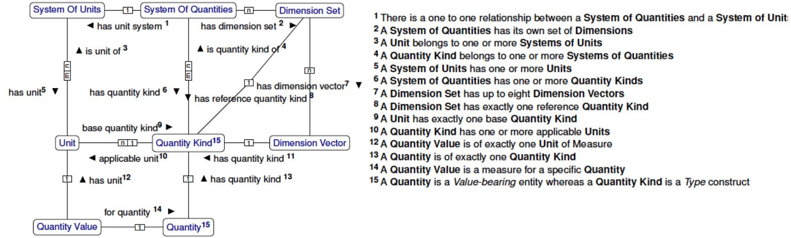
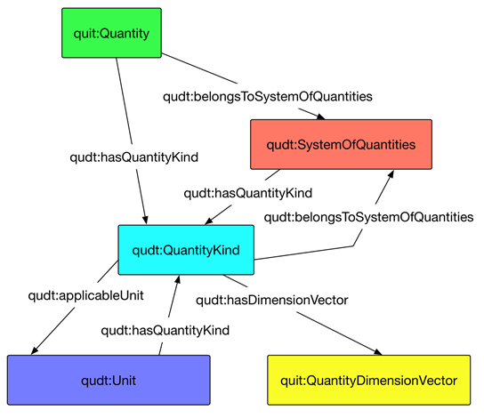
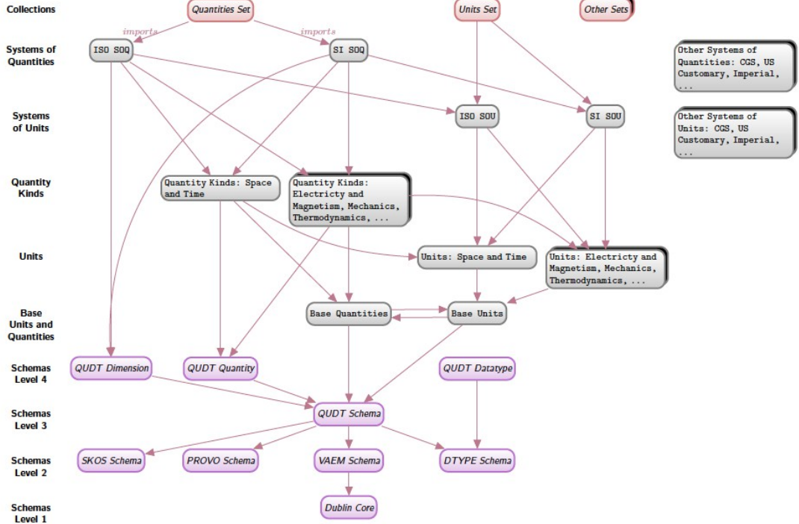
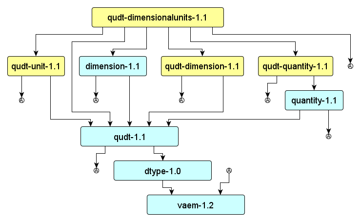

QUDT Notes
Table of Contents
Resources
Saved in Google Drive WP3\background\QUDT
- http://www.openphacts.org/specs/units/
- Encoding units and unit types in RDF using QUDT. Open PHACTS Working Draft 13 September 2013.
- Latest editor's draft: http://www.bigcat.unimaas.nl/~egonw/units/ (this page is down)
- OpenPHACTS is an aggregation of lifeSci and pharmaceutical data, so it's relevant.
It's a worth-while read because it considers some cases and defines some principles.
They have examples defining
ops:GramPerLiterandops:MilligramPerDeciliter(withrdf:type qudt:MassPerVolumeUnit) The RDF seems quite similar to what you've used.
- https://semanticommunity.info/Data_Science/Data_Science_for_Cyber_Physical_Systems-Internet_of_Things/QUDT
- QUDT.xlsx is a convenient sheet for looking up units (saved as QUDT-1.0.xlsx)
- "The TopQuadrant work on QUDT and the NASA QUDT Handbook work seems to have stalled."
- "The Semantic Community Data Science Audit of the TopQuadrant work on QUDT found some gaps and errors, which we are currently trying to understand and fix."
Presentations:
- QUDT-overview (James Masters TQ, 200909)
- NASA-QUDT-Handbook-v10 (Ralf Hodgson TQ, PDE2013, 201310)
- Semantic Community- Data Science for QUDT (2015-06)
- QUDT Toolkit- Development of a Framework to Allow Management of Digital Scientific Units (2017)
Diagrams
QUDT-model
QUDT 2.0. Very useful, shows the main 8 classes and relations between them, and describes the rationale for the cardinalities. Also see the diagrams in the QUDT Overview, which show the attributes of each class, but can't fit all classes on one diagram.

QUDT-model1
QUDT 1.1. Shows the main 5 classes and relations between them, with the precise property names

QUDT-archtecture
QUDT 1.1. Shows the conceptual levels of QUDT and ontologies that it uses.

QUDT-architecture1
QUDT 1.1. Shows the dependencies between modules of QUDT and ontologies that it uses.

Versions
QUDT comes in 3 versions. We use the latest one (2.0). The resources are a bit spread around two sites, so I give an overview below.
QUDT 1.0
I can't find a listing of files, but some of them lurk at the new 2.0 site:
QUDT 1.1
http://www.linkedmodel.org/catalog/qudt/1.1/index.html. The files are:
OSG_dimension-(v1.1).ttl OSG_dtype-(v1.0).ttl OSG_quantity-(v1.1).ttl OSG_qudt-(v1.01).ttl OSG_vaem-(v1.2).ttl OSG_voag-(v1.0).ttl OVG_dimensionalunits-qudt-(v1.1).ttl OVG_dimensions-qudt-(v1.1).ttl OVG_quantities-qudt-(v1.1).ttl OVG_units-qudt-(v1.1).ttl
Prefixes:
@prefix qudt: <http://qudt.org/schema/qudt#> . @prefix unit: <http://qudt.org/vocab/unit#> . @prefix dimension: <http://qudt.org/vocab/dimension#> . @prefix quantity: <http://qudt.org/vocab/quantity#> .
(It also defines qudt-1.1: etc but doesn't use them.)
QUDT 2.0
http://www.qudt.org/release2/qudt-catalog.html. I have downloaded all files available as of 29-Mar-2019 (a lot more are expected to be released:
SCHEMA_QUDT-DATATYPES-v2.0.ttl SCHEMA_QUDT-SCIENCE-v2.0.ttl SCHEMA_QUDT-v2.0.ttl VOCAB_QUDT-DISCIPLINES-v2.0.ttl VOCAB_QUDT-UNITS-ACOUSTICS-v2.0.ttl VOCAB_QUDT-UNITS-BASE-v2.0.ttl VOCAB_QUDT-UNITS-ELECTROMAGNETISM-v2.0.ttl VOCAB_QUDT-UNITS-LIGHT-v2.0.ttl VOCAB_QUDT-UNITS-MECHANICS-v2.0.ttl VOCAB_QUDT-UNITS-PHYSICAL-CHEMISTRY-AND-MOLECULAR-PHYSICS-v2.0.ttl VOCAB_QUDT-UNITS-SPACE-AND-TIME-v2.0.ttl VOCAB_QUDT-UNITS-THERMODYNAMICS-v2.0.ttl
Prefixes:
@prefix qudt: <http://qudt.org/schema/qudt/> . @prefix quantitykind: <http://qudt.org/vocab/quantitykind/> . @prefix unit: <http://qudt.org/vocab/unit/> .
Notes:
- SemanticCommunity: "The TopQuadrant work on QUDT and the NASA QUDT Handbook work seems to have stalled."
- Now that I think of it, I haven't seen progress on QUDT 2 in about a year
Incompatibility
If QUDT2 is missing a unit that we need, and it's in QUDT1.1, can we use both? Unfortunately no, because the two versions use incompatible URL patterns, eg:
- QUDT 1.1:
unit:KilogramPerCubicMeter - QUDT 2:
unit:KG-PER-M3
QUDT 1.1 Examples
Length
unit:Centimeter rdf:type qudt:DerivedUnit , qudt:LengthUnit ; rdfs:label "Centimeter"^^xsd:string ; qudt:abbreviation "cm"^^xsd:string ; qudt:code "2016"^^xsd:string ; qudt:conversionMultiplier "0.01"^^xsd:double ; qudt:conversionOffset "0.0"^^xsd:double ; qudt:literal "centimeter"^^xsd:string ; qudt:symbol "cm"^^xsd:string ; qudt:uneceCommonCode "CMT"^^xsd:string ; skos:exactMatch <http://dbpedia.org/resource/Centimetre> .
Time
unit:MilliSecond rdf:type qudt:DerivedUnit , qudt:TimeUnit ; qudt:quantityKind qudt-quantity:Time ; rdfs:label "Millisecond"^^xsd:string ; qudt:symbol "ms"^^xsd:string ; qudt:abbreviation "ms"^^xsd:string ; qudt:code "1616"^^xsd:string ; qudt:uneceCommonCode "C26"^^xsd:string ; qudt:conversionMultiplier "0.001"^^xsd:double ; qudt:conversionOffset "0.0"^^xsd:double ; skos:exactMatch <http://dbpedia.org/resource/Millisecond> . unit:SystemOfUnits_USCustomary qudt:systemDefinedUnit unit:MilliSecond.
Temperature
unit:DegreeCelsius rdf:type qudt:DerivedUnit , qudt:TemperatureUnit , qudt:SIUnit ; rdfs:label "Degree Celsius"^^xsd:string ; qudt:abbreviation "degC"^^xsd:string ; qudt:code "0515"^^xsd:string ; qudt:conversionMultiplier "1"^^xsd:double ; qudt:conversionOffset "273.15"^^xsd:double ; qudt:symbol "degC"^^xsd:string ; skos:exactMatch <http://dbpedia.org/resource/Celsius> . unit:DegreeFahrenheit rdf:type qudt:TemperatureUnit , qudt:NotUsedWithSIUnit ; rdfs:label "Degree Fahrenheit"^^xsd:string ; qudt:abbreviation "degF"^^xsd:string ; qudt:code "0525"^^xsd:string ; qudt:conversionMultiplier 0.5555555555555555556E0 ; qudt:conversionOffset 255.37037037037037037E0 ; qudt:symbol "degF"^^xsd:string .
QUDT 2 Examples
Concentration
unit:KG-PER-M3 rdf:type qudt:DerivedUnit, qudt:MassPerVolumeUnit, qudt:Unit ; qudt:conversionMultiplier 1.0e0 ; qudt:conversionOffset "0.0"^^xsd:double ; qudt:hasQuantityKind quantitykind:Density .
The link to quantitykind:Density is in QUDT2 but not in QUDT1.1. This link is consistent with a restriction on the type qudt:MassPerVolumeUnit:
qudt:MassPerVolumeUnit rdf:type owl:Class ; rdfs:subClassOf qudt:MassUnit ; rdfs:subClassOf [ rdf:type owl:Restriction ; owl:hasValue quantitykind:Density ; owl:onProperty qudt:hasQuantityKind ; ] .
BDG Units
gram-per-liter
Let's define "gram-per-liter" after the QUDT 2 fashion. For this purpose we need to look at these terms:
unit:L(VOCAB_QUDT-UNITS-SPACE-AND-TIME-v2.0.ttl)unit:KG-PER-M3(fromVOCAB_QUDT-UNITS-MECHANICS-v2.0.ttl)
bdg-unit:G-PER-LT rdf:type qudt:DerivedUnit ; rdf:type qudt:MassPerVolumeUnit ; rdf:type qudt:Unit ; qudt:abbreviation "g/L" ; qudt:conversionMultiplier 1.0e0 ; qudt:conversionOffset "0.0"^^xsd:double ; qudt:description "Gram per liter is a convenience unit, numerically the same as Kilogram per Cubic Meter" ; qudt:hasQuantityKind quantitykind:Density ; qudt:symbol "g l^{-1}" ; rdfs:isDefinedBy bdg-unit: ; rdfs:label "Gram per Liter" ; skos:prefLabel "gram-per-liter" ; .
Notes:
- This unit is numerically the same as
unit:KG-PER-M3, soqudt:conversionMultiplieris 1.0 - Nevertheless, some disciplines use such "customary units" for convenience
- I don't define
qudt:code(eg "0995") andqudt:id(eg "U-150-0995") because I'm too lazy to look them up